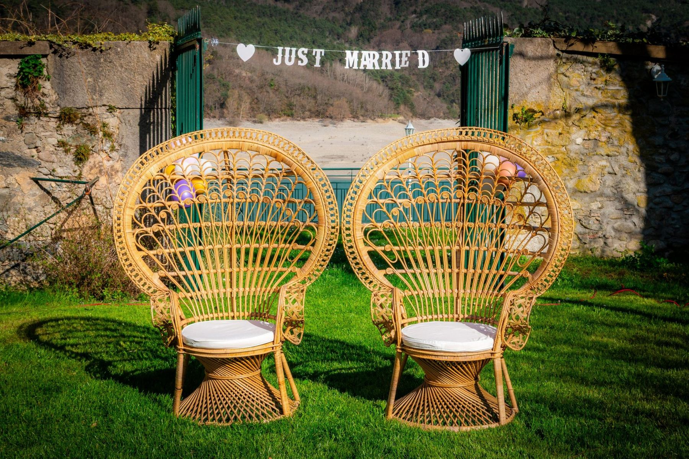
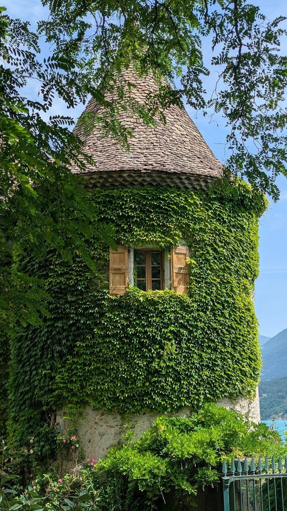

Un mariage champêtre au bord du lac.
Le château pour tout le week-end : vin d’honneur sur la pelouse face à l’eau, dîner en grandes tablées, vos proches qui dorment sur place, et le brunch au soleil le lendemain.
Recevoir la plaquette mariage
Votre week-end au château
- VendrediVos proches s’installent dans les 13 chambres, 39 couchages en tout. Premier verre sous les arbres.
- SamediVin d’honneur sur la pelouse face au lac, dîner en grandes tablées, et la fête qui continue sous les voûtes.
- DimancheBrunch au soleil, pique-nique au bord du lac ou barbecue sur la pelouse. Personne n’est pressé de partir.

Le château entier, pour le week-end
Du vendredi soir au dimanche : le parc, les salons, les caves voûtées et les 13 chambres, 39 couchages. Tables, chaises et vaisselle comprises.
- Hiver : novembre à marsdès 4 500 €Cheminée, caves voûtées et vin chaud : le mariage d’hiver a ses atouts.
- Mi-saison : avril, octobredès 6 000 €
- Haute saison : mai, juin, septembredès 7 000 €
- Le repas, avec notre chefdès 70 € / pers.Quatre formules : 70 €, 80 €, 100 € et 130 €.
- Cérémonie et vin d’honneur jusqu’à 150 invités+ 15 € / invitéAu-delà de 100 invités : chaises, service et ménage en plus. Le dîner reste à 100 invités.
Le détail mois par mois et les formules du chef sont dans la plaquette. Recevoir la plaquette
Quelqu’un à vos côtés, de la première visite au jour J
- Une coordinatrice ou un coordinateur dédiéVous le connaissez depuis le début. Il est là le jour J et accueille vos invités à leur arrivée.
- Des prestataires que nous connaissonsFleuristes, photographes, musiciens : une liste courte, que nous recommandons.
- Notre chef aux fourneauxDes menus construits avec vous, pour qu’il n’y ait aucune surprise le jour J.
Les boissons, et le dimanche au lac
Les forfaits boissons
- Vin d’honneur15 € / pers.Deux verres de bulles, de vin ou de cocktail maison, softs et eaux à volonté.
- Vin d’honneur au champagne25 € / pers.Le même, avec du champagne.
- Vins du dînerdès 20 € / pers.Une demi-bouteille de blanc et de rouge par invité, eaux et café. Sélection de grands vins 30 €.
- Open bar de la soirée15 € / pers.Bière, vin et softs pendant trois heures. Ensuite, le bar est à la consommation.
Prix TTC, par adulte. L’abus d’alcool est dangereux pour la santé, à consommer avec modération.
Le dimanche au lac
- Brunch35 € / pers.En terrasse ou sur la pelouse, selon le temps.
- Pique-nique25 € / pers.Un panier à emporter au bord de l’eau ou jusqu’aux passerelles.
- Barbecue40 € / pers.Sur la pelouse face au lac, préparé par notre équipe.
Vos invités peuvent aussi faire du paddle, naviguer ou marcher jusqu’aux passerelles himalayennes.


Le décor est déjà là
Un parc arboré qui descend jusqu’à l’eau turquoise, une façade couverte de lierre, une tourelle, la montagne en face. Et vos invités peuvent faire du paddle, naviguer ou randonner tout le week-end.
Les espaces de votre mariage
| Espace | Capacité | Pour |
|---|---|---|
| Parc arboré, 3 000 m² | 150 invités | Cérémonie face aux montagnes, vin d’honneur sur la pelouse, accès direct au lac |
| Caves voûtées, 220 m² | 100 assis | Dîner, fête jusqu’à 4 h ; repli de la cérémonie et du vin d’honneur en cas de pluie (150 debout) |
| Terrasse abritée | 40 assis | Vin d’honneur à l’abri, brunch du dimanche face au lac |
| Trois salons | 60 m² chacun | Préparatifs des mariés, coin calme pour les enfants ou les grands-parents |
| Tente nomade (option) | sur devis | Pour rester dehors quel que soit le temps |
| 13 chambres | 39 couchages | Vos proches dorment sur place du vendredi au dimanche |
S’il pleut
La cérémonie et le vin d’honneur se replient dans les caves voûtées ou sur la terrasse abritée, et le dîner ne bouge pas. Vous préférez rester dehors ? Une tente nomade est disponible en option, sur devis.
Les questions qu’on nous pose
Peut-on célébrer une cérémonie laïque au château ?
Oui, sur la pelouse, face aux montagnes, jusqu’à 150 invités. S’il pleut, la cérémonie se replie dans les caves voûtées de 220 m² ou sur la terrasse abritée. Une tente nomade est aussi disponible en option.
Combien d’invités peut-on recevoir ?
Jusqu’à 150 pour la cérémonie et le vin d’honneur, et jusqu’à 100 pour le dîner dans les caves voûtées. Au-delà de 100 invités, comptez 15 € par invité supplémentaire (chaises, service et ménage).
Fournissez-vous les boissons ?
Oui, avec des forfaits : vin d’honneur 15 € (25 € au champagne), vins du dîner dès 20 €, open bar de la soirée 15 € par adulte.
Jusqu’à quelle heure peut durer la fête ?
Jusqu’à 4 h du matin.
Qui prépare les repas ?
Notre chef, avec quatre formules à 70 €, 80 €, 100 € et 130 € par personne. Le dimanche : brunch 35 €, pique-nique 25 € ou barbecue 40 €.
Qu’est-ce qui est fourni ?
Les tables, les chaises et la vaisselle. La sonorisation et la décoration se prévoient avec vos prestataires ; nous vous recommandons les nôtres.
Où dorment les invités au-delà des 39 couchages ?
Il y a des campings et des gîtes tout près : nous vous donnons nos adresses.
Combien de temps à l’avance faut-il réserver ?
Au moins un mois avant, mais beaucoup de dates partent un an à l’avance. Un acompte de 30 % confirme la réservation.
Nos chiens peuvent-ils venir ?
Oui, les animaux sont les bienvenus.
Venez voir le lieu
On vous envoie la plaquette et on vous propose une visite. On célèbre des mariages de septembre à juin, l’hiver compris.